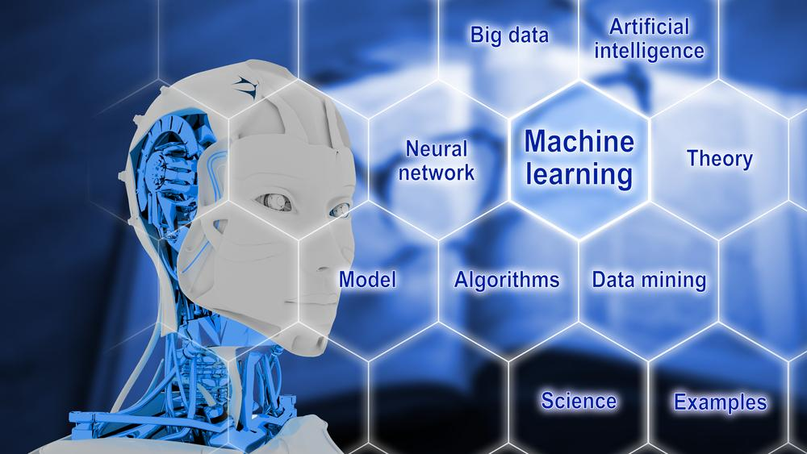

Introduction
L’intelligence artificielle rend les machines capables d’apprendre de l’expérience, de s’adapter à de nouveaux entrées et d’effectuer des tâches semblables à celles de l’homme. La plupart des exemples d’intelligence artificielle dont vous entendez parler aujourd’hui – des ordinateurs de jeu d’échecs aux voitures autonomes – reposent fortement sur l’apprentissage profond et le traitement du langage naturel. Grâce à ces technologies, les ordinateurs peuvent être formés pour accomplir des tâches spécifiques en traitant de grandes quantités de données et en reconnaissant les tendances dans les données.
L'histoire de l'IA
Le terme intelligence artificielle a été inventé en 1956, mais AI est devenue plus populaire aujourd'hui grâce aux volumes de données accrus, aux avancés des algorithmes et des améliorations de la puissance de calcul et du stockage.
Les premières recherches en AI dans les années 1950 a exploré des sujets comme la résolution de problèmes et des méthodes symboliques. Dans les années 1960, le Ministère de la Défense des US a pris de l'intérêt à ce type de travail et a commencé à former des ordinateurs pour imiter le raisonnement humain. Par exemple, l'Agence de Projets de Recherche avancée de Défense (DARPA) a fini le projet de mapping des rues dans les années 1970. Elle a créé aussi des assistants personnels intelligents en 2003, longtemps avant que Siri, Alexa ou Cortana ne soient des noms très connus.
Ce premier travail a frayé la voie pour l'automatisation et le raisonnement formel que nous voyons dans nos ordinateurs aujourd'hui, y compris des systèmes d'aide à la décision et les systèmes de recherche intelligents qui peuvent être conçus pour compléter et augmenter des capacités humaines.
Tandis que les films de Hollywood et les romans de science-fiction dépeignent AI comme les robots semblables à l'homme qui prennent le contrôle du monde, l'évolution actuelle de technologies AI n'est pas qu'effrayante - ou à tel niveau d'intelligence. Au lieu de cela, AI s'est développé pour fournir beaucoup d'avantages spécifiques dans chaque industrie.
Pourquoi l'intelligence artificielle est importante ?
Comment l'AI est-elle utilisée ?

Chaque industrie a une forte demande de capacités d’intelligence artificielle – en particulier les systèmes de réponse aux questions qui peuvent être utilisés pour l’aide juridique, la recherche de brevets, la notification des risques et la recherche médicale. Les autres utilisations de l’IA comprennent :
- Soins de santé :Les applications de l’intelligence artificielle peuvent fournir une médecine personnalisée et des lectures aux rayons X. Les assistants de soins de santé personnels peuvent agir comme entraîneurs de la vie, vous rappelant de prendre vos pilules, faire de l’exercice ou manger plus sainement.
- Vente au détail: L’IA offre des capacités d’achat virtuelles qui offrent des recommandations personnalisées et discutent des options d’achat avec le consommateur. La gestion des stocks et les technologies de disposition des sites seront également améliorées grâce à l’IA.
- Industrie manufacturière: L’intelligence artificielle peut analyser les données de l’IoT en partant de l’équipement connecté pour prévoir la charge et la demande prévues à l’aide de réseaux récurrents, un type spécifique de réseau d’apprentissage profond utilisé avec des données de séquence.
- Services bancaires: L’intelligence artificielle améliore la rapidité, la précision et l’efficacité des efforts humains. Dans les institutions financières, les techniques d’intelligence artificielle peuvent être utilisées pour identifier les transactions susceptibles d’être frauduleuses, adopter une notation de crédit rapide et précise, ainsi que d’automatiser manuellement des tâches de gestion des données intenses.
Méthodes et technologies de l'AI ?
Des oeuvres d'AI en combinant les grandes quantités de données avec le traitement rapide, itératif et des algorithmes intelligents, la permission du logiciel pour apprendre automatiquement de modèles ou des caractéristiques dans les données. AI est un large champ d'étude qui inclut beaucoup de théories, méthodes et technologies, aussi bien que les souschamps majeurs suivants:
- Le machine Learning automatise la construction des modèles analytiques. Il utilise des méthodes de réseaux neuraux, la statistique, la recherche opérationnelle et la physique pour trouver des insights cachés dans des données sans explicitement être programmé pour où regarder ou que conclure.
- Un réseau de neurones est un type d'apprentissage automatique qui est composé d'unités inter-connectées (comme des neurones) qui traitent des informations en répondant aux apports externes, retransmettant des informations entre chaque unité. Le processus exige multiples passages aux données pour trouver des connexions et tirer la signification de données non définies.
- Le deep Learning utilise les réseaux neuraux énormes avec beaucoup de couches de traitement des unités, profitant d'avance de la puissance de calcul et des techniques d'apprentissage améliorées pour apprendre le modèle. Les applications communes incluent l'image et la reconnaissance vocale.
- Le calcul cognitif est un section d'AI qui lutte pour une interaction naturelle, semblable à l'homme avec des machines. En utilisant AI et le calcul cognitif, le but ultime pour une machine est de simuler des processus humains par la capacité d'interpréter des images et les discours afin de parler et répondre ensuite de manière cohérente
- La vision par ordinateur compte sur la reconnaissance de formes et le deep learning pour déterminer ce qui est dans une image ou une vidéo. Quand les machines peuvent traiter, analyser et comprendre des images, ils peuvent capturer des images ou des vidéos en temps réel et interpréter leur environnement.
- Le traitement automatique des langues (NLP) est la capacité d'ordinateurs d'analyser, comprendre et produire la langue humaine, y compris le discours. L'étape suivante de NLP est l'interaction de langage naturel, qui permet aux humains de communiquer avec des ordinateurs utilisant le langage familier et courant pour exécuter des tâches.
Conclusion
Dans cette section, nous avons défini l'Intelligence Artificiel et nous avons parlé un peu de l'histoire de cette technologie. Ensuite, nous avons expliqué pour l'IA est importante comment elle est utilisée pour améliorer notre quotidien. Enfin, nous avons définis les différents méthodes et technologies de l'Intelligence Artificielle qui sont utilisés dans la réalisation des projets dans divers domaines.